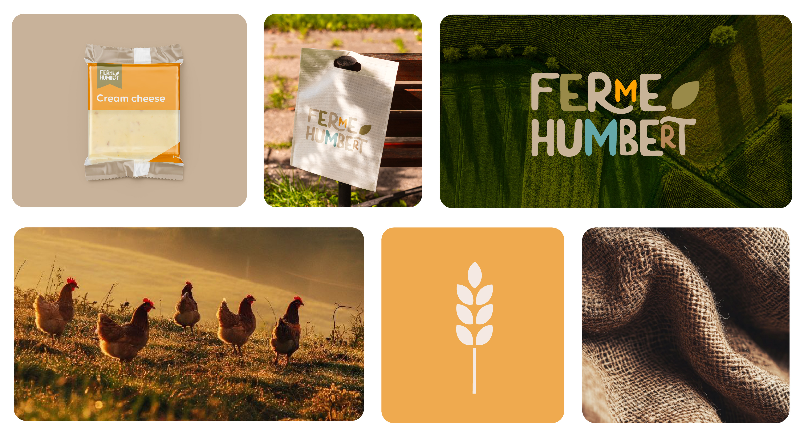
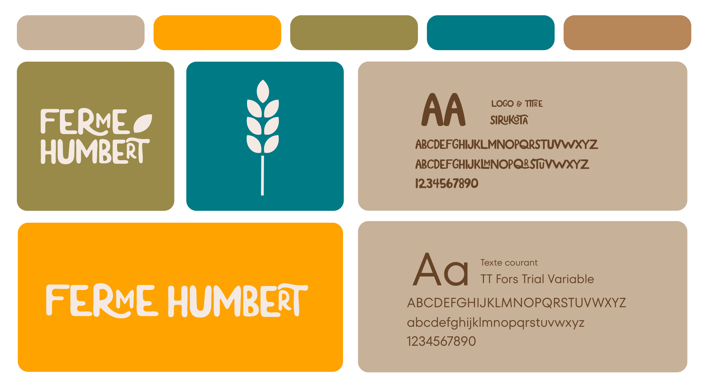
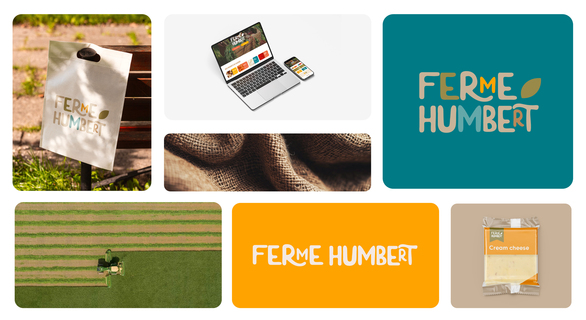

Ce projet consistait à refondre l’identité graphique d’une ferme, incluant la création de supports visuels et la refonte de son site web, afin de mieux représenter ses produits et ses valeurs.

Redonner du dynamisme et une touche de modernité à la marque, tout en conservant son authenticité et son lien avec la production agricole.

Mettre en avant le caractère naturel et artisanal de la ferme à travers une identité visuelle simple et reconnaissable.
Palette de couleurs primaires :


Exposition immersive éphémère pour laquelle j’ai réalisé les supports de communication web.
Voir le projet →
Projet de 3D réalisé sur Blender. De la phase de conception 2D sur papier jusqu’à la modélisation et mise en scène finale en 3D
Voir le projet →
Création d'affiches souvenirs correspondant à mon propre univers graphique.
Voir le projet →